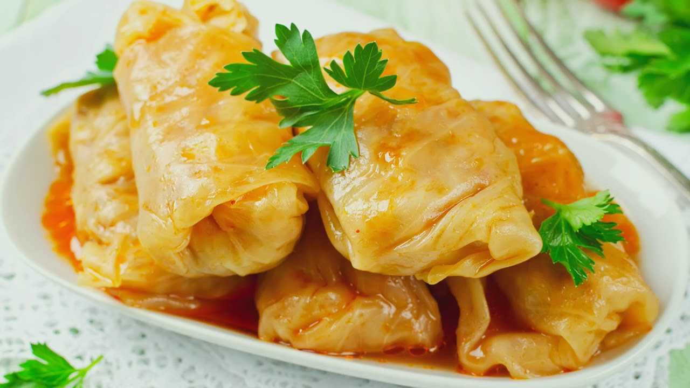

Кулинарный цех "Пирожок" 
Блюда по домашним рецептам - вам понравится!
Голубцы

Голубцы - это блюдо, состоящее из капустных листьев и мясного фарша.
Это вкусное и насыщенное блюдо, которое обязательно понравится всей семье.
Ингредиенты:
- Капустные листья
- Говядина или свинина
- Рис
- Лук
- Морковь
- Помидоры
- Чеснок
- Соль и перец
- Растительное масло
- Зелень (по желанию)
Рецепт приготовления:
- Отварите капустные листья в кипящей воде до мягкости, затем остудите их.
- Приготовьте начинку: перемелите говядину, добавьте отварной рис, мелко нарезанный лук, тертую морковь, соль и перец по вкусу.
- Начините каждый капустный лист фаршем и аккуратно заверните в голубец.
- Уложите голубцы в кастрюлю или сковороду, добавьте нарезанные помидоры, чеснок, соль и перец, залейте растительным маслом и немного воды.
- Тушите голубцы под крышкой на среднем огне до готовности, при необходимости подливая воду.
- Подавайте горячими, посыпанными свежей зеленью. Приятного аппетита!